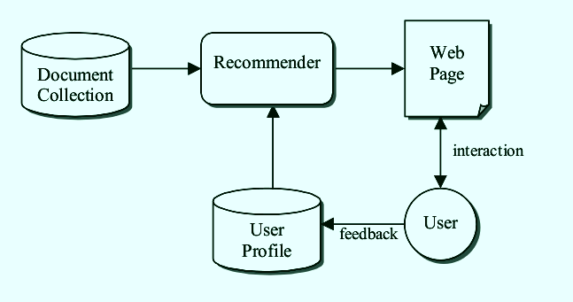
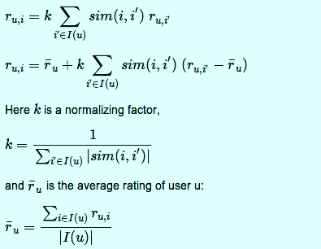

A Recommendation Engine
for Scholarly Articles
| Submitted To: Asst. Prof. Swati Singal ssingal@amity.edu |
Submitted By: Archit Sharma archit.py@gmail.com |
Who?
Archit Sharma
(a.k.a @arcolife )
Bachelors, Computer Science & Engineering
Amity University
Batch: 2010-14
It's just a Recommendation Engine.
..for Scholarly Articles
Document recommendation for real !
constrained dataset? A simple approach

We have used only a small set of liked research papers as training data and there is no other information about user preferences or other users in the system.
We have used only a small set of liked research papers as training data and there is no other information about user preferences or other users in the system.
Content-based Algorithm
Generalization of the aggregation functions
NoSQL + Django
The “pythonic database”
dict ~ JSON
# Python
person = {
'name': "Alex F.",
'skills': ["AngularJS", "CSS3", "HTML5"],
'work': None
}
// Javascript
person = {
"name" : "Alex F.",
"skills" : ["AngularJS", "CSS3", "HTML5"],
"work" : null
};
Writing Python is fun, and keeping everything in Python limits the number of times your brain has to do a "context switch." It helps productivity if you keep yourself in a single programming environment/mentality for as long as possible.—Djangobook.com
with MongoDB
At the core of Django is its ORM
MongoEngine
is an Object-Document Mapper made for MongoDB, following Django's ORM style.
Consider MongoDB when...
- You are starting a project with design freedom
- Your app has an evolving data schema
- Your want auto-sharding on a simple schema
- Your app has plenty of geospatial data
- You have high-volume traffic
- Your app works around a RESTful JSON API
Thank you
Questions?
Share Tweet